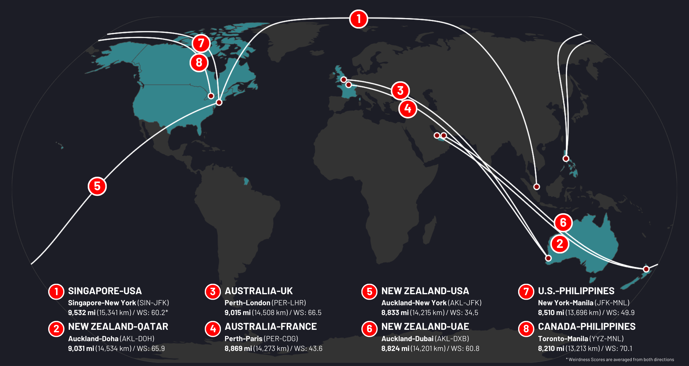
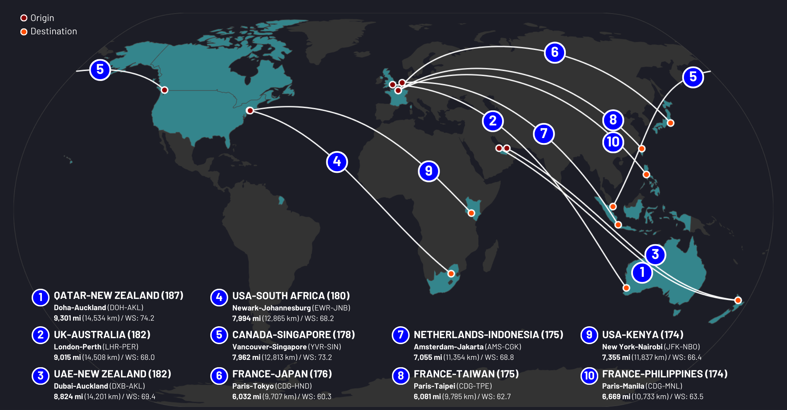
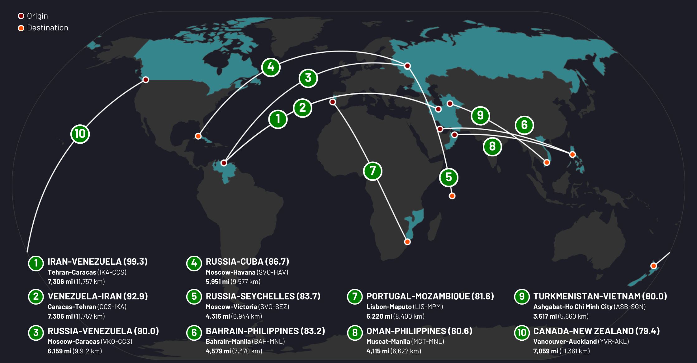

1. DIPLOMACY
The first thing you should know if you're an Iranian looking to take a vacation is that your options are limited.
It goes without saying, but Iran doesn't exactly have the best relations with a lot of countries. It all started in 1979 with the hostage crisis that led to the first round of U.S. sanctions. There was the war with Iraq in the 80s, which led to the reapplication of sanctions. Then Iran's nuclear program started to draw attention, and the United Nations demanded that it cease. The 2015 nuclear deal promised to end the decades of on-and-off sanctions, but it broke down in 2018. Iran remained the world's most sanctioned country until 2022, not because its foreign relations thawed, but because Russia surpassed it.
Things are actually looking up for Iranian aviation at the moment, partially because there was nowhere else to go but up. In October, the European Union banned most flights operated by Iran's three biggest airlines – Iran Air, Mahan Air, and Iran Aseman Airlines – claiming that these airlines were supplying ballistic missiles to Russia to assist in their invasion of Ukraine. But just recently, the unsanctioned airline Iran Airtour announced that it would fly between Tehran and Paris, and German airline Lufthansa is resuming flights to Tehran as well. Even so, while other Persian Gulf nations have built some of the biggest international airlines in the world – think Emirates, Qatar, Saudia – Iran remains far more isolated on the world stage. Even with the Paris flights, France will be the furthest west you can get from Tehran's Imam Khomeini International Airport.
Or… wait a second. What's this? We've left Tehran, flying due west, but we've gone right over Italy, we're not going north to Paris. We've passed over Madrid, we've passed over Lisbon. Why are we flying over the Atlantic? Something must be going horribly wrong. What are we doing? There's no way you'd be able to fly from Iran of all countries to the Americas. It would be too big a risk, having cordial relations with Iran. This must be an emergency. You'd have to find another country isolated on the world stage, firmly opposed to the U.S., just as willing to be sanctioned by the EU. But they don't make countries like that here. This is South America, we've just crossed the Carib-
Oh.
Thank you for flying Conviasa flight 3751, and welcome to Venezuela! We hope you enjoy your stay in Caracas or wherever your final destination may be.
You've just taken the weirdest international flight in the world.
2. THE WEIRDEST FLIGHT IN THE WORLD
There's nothing quite like it.
Wheels up
All 4,564 flights that connect unique origin and destination countries
Take all of the regularly scheduled flights from one country to another – say India to Australia – and reduce them down to one: Delhi to Sydney. Do that for every combination of countries, and you get the 4,564 international flights you see in the map above. (I went through the process by which I found all of these flights in Part One of this series, which you can read here.)
For all of these flights, I identified the latitude and longitude of their origins and destinations, from which I calculated the great-circle distance of each route.1 With all of this information, I came up with a metric I call the Weirdness Score.
The Weirdness Score (WS) quantifies how weird it would be if there was a flight from one particular country to another. I used four variables in the calculation of this metric. One, the distance of the flight. It's weirder for two countries that are far away from one another to have a flight between them. Two and three, the number of countries accessible from the origin and destination country, respectively. Flights between countries that don't have flights to many other countries are naturally going to be weird. If the origin or destination is a major aviation hub like France (Paris) or the United Arab Emirates (Dubai), the flight's just not as weird.
Finally, the fourth variable is relative distance: how far away the destination country is, relative to all other destination countries. This is important because it screens out remote countries. Without this variable, the weirdest connection would be Micronesia to the Marshall Islands, given that both countries have flights to less than five other nations and have almost a thousand miles of open ocean in between their main airports. But the Marshall Islands are the second-closest country to Micronesia, which makes this flight a lot less weird. In fact, it would be weirder if this flight didn't exist.
So I took all of these variables and scaled the result into a 0-100 score, where the weirdest flight ended up with a score of 99.3.2 (A flight could theoretically have a score above 100, but I imposed an upper bound of 100 just to keep things within the realm of sanity. The highest possible WS without this bound is 208.2.3) The 99.3 WS belongs to, of course, Conviasa 3751, connecting Tehran to Caracas.
What makes Conviasa 3751's score so uniquely high? First off: distance.
3. THE EIGHT-THOUSANDERS
The eight-thousanders are a group that defines the upper limits of altitude: the world's 14 tallest mountains, all with heights over 8,000 meters (26,247 feet) above sea level. It's only fitting that the same name could be applied to the world's longest flights, which travel over 8,000 miles.4
There are 30 or so routes that go this distance, but in terms of the country-to-country pairs shown back in that flight map, there are just eight.
These flights get around
The 8 most distant pairs of countries connected by air (by main airports)
Singapore Airlines Flights 23 and 24 are the world's longest flights, connecting Singapore's Changi Airport and New York's John F. Kennedy International Airport. The shortest possible distance between these airports is over 9,500 miles, and that's not even taking into account Singapore Airlines' avoidance of Russian airspace since the invasion of Ukraine. Both flights now routinely travel more than 10,000 miles.
It's impressive how much further these flights travel than any other. The only other routes on this list that even cross the 9,000-mile threshold are Qatar Airways' Doha-Auckland service and Qantas' Perth-London "Kangaroo Route." And still, they get nowhere close to Singapore-New York's over 10,000-mile distance in actuality.
But at the same time, these flights aren't that weird. At least not in terms of there being an air connection between Singapore and the United States. New York and Singapore are two of the world's major hubs, with JFK and Changi both ranking in the top 20 for passenger traffic. The U.S. has flights to 82 countries, placing it in the top 10 countries for air travel, while Singapore is connected to 43. Basically, if there was going to be a route with flights this long, you'd suspect it would be this one. Add all of this to the fact that there are major U.S. cities closer to Singapore, like Seattle and San Francisco, and it's not so weird that there are flights between the two countries. This route has a Weirdness Score of 60.2. Definitely surprising, but not truly extraordinary.
There are some commonalities among the eight routes in the map above. Three connect Southeast Asia to North America, including the weirdest member of this category, Philippine Airlines' Toronto-Manila. The Philippines are connected by air to just 24 other countries, while Toronto isn't an international hub on the level of New York, making this flight pretty weird. Two more routes connect Australia to Europe, a link that didn't exist until 2018 but now includes flights from Perth to London and Paris (and seasonally to Rome). An additional three routes essentially connect New Zealand to the rest of the world, given how isolated it is.
But if we want to get into the upper echelons of weirdness, we're going to have to find routes that stay away from hubs. We can get more obscure than Dubai and Doha. Let's explore the other element of strangeness: accessibility.
4. "WIDEN YOUR WORLD"
And if we're talking accessibility, we have to return to Istanbul Airport, which we first visited in Part One. It's worth it just to take a look at how dominant Turkish Airlines is at the game of flying to the most countries. Their slogan is "Widen your world" for a reason: Istanbul's practically the center of the aviation world, with flights to 115 out of a possible 190 countries.5 No other airport gets to 100. Let's just say Turkish Airlines flights are nowhere near the upper echelons of the Weirdness Score. Here's the interactive map again:
The world's hub
All countries with flights from Istanbul Airport, Turkey
But international flights are, to say the least, unevenly distributed.
Part of the reason for that is the density and relative position of countries. The island nations of Oceania are far away from each other and from the rest of the world, meaning they don't see many international flights. Meanwhile, European countries on the smaller side, like Czechia and Hungary, have connections to around 40 or more countries, owing primarily to the high density of countries in Europe. Plus, Europe isn't too far from the Middle East or North Africa, which only increases its airports' international potential.
Istanbul Airport is the center of the world because of these factors. It's far west enough to connect seamlessly to all of Europe, far east enough to conveniently reach South and Southeast Asia (and Australia in the future), and far south enough to target nearly the whole African continent. Its Western Hemisphere connections are just the cherry on top.
At the same time, though, the vast majority of African nations have flights to less than 20 other countries, despite the density of countries in the west and east of the continent. In fact, the Central African Republic borders more countries (6) than it has flights to (4). Despite having "Central" in its name, it's nowhere near central when it comes to air travel. And incidentally, not even Turkish Airlines flies to Bangui.6 Becoming a hub requires more than location: it takes people willing to fly through a given location, and an airline to take advantage.
For the 190 countries that operate regularly scheduled flights, here's how many countries you can get to from each of them. Again, the globe is interactive. Take a spin!
Globalization to the max
The number of countries you can fly to from each country
France's 107 international connections come second to Turkey's 116 in the rankings of the world's top countries for air travel.7 Notably, five of these flights don't originate in Europe: they depart from Mayotte, Guadeloupe, and Martinique. These departments aren't territories: they have the same status as those on the French mainland, and so France is directly connected to countries like the Comoros, Haiti, and Trinidad and Tobago. It's a similar story with the sixth-ranked Netherlands: 9 of its 86 connections are based out of the Caribbean, eight from Sint Maarten and one, to Venezuela, from Curaçao.
The other big European nations are also up there: the United Kingdom with 90, Germany with 88, Italy with 78, and Spain with 77. Big tourist destinations with established airlines, big populations, and dozens of nearby countries. Of the world's top 25 countries by aerial openness, over half are in Europe, including smaller nations like Switzerland, Greece, and Denmark.
Another major source of international flights is the Gulf states, which have completely changed the game over the past 10 to 15 years. Emirates, Etihad Airways, and Qatar Airways, the so-called "Big Three" in the Gulf, have made the United Arab Emirates and Qatar two of the world's preeminent hubs for air travel. Buoyed by strong government support, strategic location between all six inhabited continents, and a combination of lower prices and superior service, these airlines now legitimately connect the whole world. You can now fly from the UAE and Qatar to 99 and 85 countries, respectively.
And competition in the region is only growing. Saudi Arabia connects to 61 countries, placing it 16th worldwide. Even Kuwait has flights to 39 countries – as many as Japan. Airlines in Bahrain, Jordan, and Oman are also getting in on the action.
Then there are the world's two biggest economies, the U.S. and China, with flights to 82 and 76 countries respectively. They benefit from their large landmasses, which allow them to pair traditional major-city hubs – New York and Beijing – with airports further away that specialize in particular regions – Miami and Honolulu in the U.S., Hong Kong and Ürümqi in China, for example. These regional specialty airports only increase their destination country potential.
Here's how the United States gets to 82:
So many options to choose from
All countries with flights from U.S. airports
Almost every part of the world is within reach of the U.S.'s airports. From Miami and New York's JFK, you can fly directly to just about every country in the Americas, half of Europe, and a few countries in Asia and Africa. Honolulu tacks on a few more Pacific nations. Interestingly, there are a few countries you can get to from Newark Liberty International Airport in New Jersey that you can't reach from JFK, at least not year-round: Sweden, Greece, Ethiopia, and South Africa. And we can't forget the only airport in the U.S. with flights to Vietnam: San Francisco International.
Beyond major players like the U.S., there are other important regional hubs scattered around the world. Despite not actually being in South America, Panama City's Tocumen International Airport is the only airport with flights to every country in South America. Addis Ababa and Cairo are home to Africa's "most international" airports, with connections to 65 and 60 countries respectively. India, Australia, and South Africa also serve as the biggest hubs for their slices of the world. Airports here are responsible for linking smaller countries in their region to the rest of the world.
And while the Gulf states connect all of those hub airports together, the country the Persian Gulf is essentially named for – Iran – is nowhere to be seen.
5. THE AXIS OF UNITY
Iran comes in at 71st in the accessibility rankings with flights to 23 countries, tied with Moldova and behind Sri Lanka. Even neighboring Armenia, with 30 times fewer people, has flights to 24 countries. This is the cost of international isolation.
Most countries that find themselves in the middle tier of accessibility would have their longest flight connect to a major hub like Istanbul, London, or Singapore. But not Iran. The second-longest flight you can take out of Tehran is to Shanghai, at a distance of just under 4,000 miles.
And then, inexplicably, the longest flight from Imam Khomeini International Airport is to Caracas, Venezuela, a city 7,306 miles away. That's what makes this flight so uniquely weird.
One friend in the west
All countries with flights from Imam Khomeini International Airport, Tehran, Iran
I mean, just look at that. It's like the pilot is Christopher Columbus trying to find a new route to India. You have to admire the sheer audacity. And let's not forget that those flights to EU countries were banned until recently. If you wanted to go west from Tehran, there was Turkey, and then, of all countries, Venezuela.
It would be one thing if Caracas was an aviation hub of any kind. But Venezuela is tied for 92nd in the accessibility rankings, with flights to 17 countries. And Caracas's airport has flights to just 15 of those. They're not the countries you would expect.
A random assortment of destinations
All countries with flights from Simón Bolívar International Airport, Caracas, Venezuela
Caracas has possibly the weirdest flight map of any international airport. You've got flights to Bolivia but not Brazil, Chile but not Argentina, Mexico but not the United States. It's a strange sort of semi-isolation. There are direct transatlantic flights to Portugal and Spain – operated by those country's airlines, not Venezuela's Conviasa – and you can technically get straight to the Netherlands via LASER Airlines' service to Curaçao.
Even with direct flights from Caracas to Moscow and Istanbul, that flight to Tehran, Conviasa 3750, still sticks out. In fact, Conviasa 3750 is right behind Conviasa 3751 in terms of Weirdness Score, with a 92.9 to match the inbound flight's 99.3.
So why does this flight exist? Well, as it turns out, Iran and Venezuela are pretty good friends. (You have to be good friends to accommodate a 7,000-mile transatlantic flight that thumbs its nose at all of your adversaries.) Venezuela's longtime leader Hugo Chávez visited Iran several times and publicly endorsed Iran's nuclear program. After Mahmoud Ahmadinejad became president of Iran, the two countries signed hundreds of agreements supporting everything from affordable housing to hospitals to dairy farms.
Despite their distance from one another, Iran and Venezuela ultimately have a lot in common: membership in the global oil cartel OPEC, antagonistic relations with the U.S., some of the most unfree societies in the world. On a 2007 visit to Tehran, Chávez responded to George W. Bush's declaration that Iran was part of an "axis of evil" with a vow that Venezuela and Iran "will united defeat the imperialism of North America," amid a backdrop of posters reading "Iran and Venezuela – the axis of unity." Even within the past year, the FBI has reported that agents of the Iranian government have been using Venezuela to plan attacks on the United States.
Is the Venezuelan economy in any state to be of benefit to Iran? No. Does Conviasa having direct flights to Tehran really make a difference on the world stage? No. But beggars can't be choosers. Venezuela and Iran have no choice but to be friends, and that's not going to change anytime soon.
And then we have the other piece of the puzzle: Conviasa itself. Most airlines in the world are just like any other company trying to make a profit. Conviasa is different. Owned by Venezuela's Ministry of Aquatic and Air Transport, it operates routes to an eclectic collection of just nine countries: Barbados, Bolivia, Brazil, Cuba, the Dominican Republic, Iran, Nicaragua, Mexico, and Russia. The once-a-week Tehran flight isn't even new: Conviasa launched it in 2007, right around the whole "axis of unity" ordeal. Back then, it included a stop in Damascus, Syria (because of course). In fact, for a while in 2023, Conviasa relaunched direct flights to Damascus! In the past, they've also flown to such meccas of Venezuelan culture as Algiers, Belgrade, and Guangzhou. Conviasa may just be the world's most perplexing airline.
So we've got distance and accessibility, but Tehran-Caracas wouldn't be able to complete the 1-2 Weirdness Score sweep without one last ingredient. Let's take a quick look at the relative distance coefficient.
6. INFINITE REACH
On October 9, 1903, the New York Times published an editorial in their Friday issue. It was titled "Flying Machines Which Do Not Fly," and in it, they predicted that it would be one to ten million years until anyone would be able to successfully fly a manned aircraft.
Ten weeks later, the Wright brothers flew the first successful airplane in the Outer Banks of North Carolina.
Their first flight took 12 seconds to travel 120 feet. They had done it millions of years ahead of schedule. And yet they could not have possibly foreseen what would happen to the industry they had created. Because, in 2017, Qatar Airways completed aviation.
On February 6 of that year, they launched their first direct flight to Auckland, New Zealand, traveling 9,301 miles in 17 and a half hours. It became the longest commercial flight in the world. And it was significant for another reason: of all the cities in the world with a population over one million, Auckland is the furthest one from Qatar. They had done it. Every major city in the world was now within reach of Doha's Hamad International Airport. The world had never been smaller.
The whole world at your fingertips
All countries with flights from Hamad International Airport, Doha, Qatar
This is what relative distance measures: how far away a flight's destination country is from its country of origin, compared to all other destination countries. There are 190 countries in the world that operate commercial flights, so for a country like Qatar, every other country gets a relative distance score of 1 to 189 – the closest country (Bahrain) to the furthest country (Samoa). New Zealand is the third-furthest country from Qatar, giving Qatar Airways 921 the highest relative distance score of any international flight in the world: 187. Here's the top 10.
As far as possible
The top 10 flights by relative distance: how far a destination country is from the origin country, compared to all possible destination countries
All of the top three flights by relative distance score travel to Oceania, with Qantas 10 from London to Perth and Emirates 448 from Dubai to Auckland joining Qatar Airways 921. There's a couple flights from the U.S. to Africa in there as well. New York-Singapore, despite being the longest flight in the world, doesn't make the cut because of Hawaii being a lot closer to Southeast Asia, but Vancouver-Singapore comes in at fifth. At seventh is Garuda Indonesia 89, which connects Jakarta to its former colonial power in the Netherlands.
The remaining three flights, also the shortest ones on the list, connect France to East and Southeast Asia. How do flights barely over 6,000 miles crack the top 10 of the relative distance rankings? The answer is simple: every country on Earth is close to France.
The sun never sets on France
All countries with flights from French airports
Not only is metropolitan France well-positioned relative to other countries by itself, France also has faraway overseas departments in the Americas (Guadeloupe, Martinique, and French Guiana) and Africa (Mayotte and Réunion). This makes Fiji the furthest country from France, despite only being about 8,500 miles away. As a result, every part of the world is within flight range of French airports. That's not even including French territories like French Polynesia and New Caledonia, which incidentally are pretty close to Fiji. France is just everywhere.
As for Conviasa 3751, its relative distance score is a 164: Venezuela is further away from Iran than all but 25 countries. So to sum it all up for the Weirdness Score: Tehran-Caracas is 7,351 miles, making it one of the longest flights in the world. Neither Iran nor Venezuela has flights to more than 25 countries, thanks to their geopolitical isolation, making them relatively hard to access for their size. And finally, not only is Caracas far away from Tehran, it's one of the furthest cities you could even think about getting to from there. There's no question about it. This is the weirdest flight in the world.
And that's just the tip of the iceberg.
7. THE NORTHWEST PASSAGE
Tick tock, it's weird o'clock. These are the top 10 flights by Weirdness Score.
These flights shouldn't exist
The 10 strangest flights as calculated by Weirdness Score
None of these flights make it onto the leaderboard in any individual metric, like accessibility or distance. But when you put it all together, these flights just don't make sense.
You know #1 and #2, Conviasa's axis of unity. 3 through 5, though, all originate in the same country: Russia. What on earth is going on in Moscow?
Living like it's 1961
All countries with flights from Russian airports
Russia's flight map is a quasi-Cold War quagmire. The world's largest country by area manages flights to 38 countries, fewer than Ireland or Kuwait. Immediately after Russia invaded Ukraine in February 2022, 33 countries closed their airspace to Russian airlines, including the entire European Union. Given that the routes out of Moscow are fronted on two sides by the EU and Ukraine, this made getting westwards out of Russia a lot harder. But two countries persisted in operating flights to Russia, and they're exactly who you'd think they'd be: Venezuela and Cuba.
Now, all of the lines on the map mark the shortest possible distance between the two airports they connect. For most flights, these great circle routes are basically the paths they take. But the shortest route from Moscow to Havana runs straight over Scandinavia and along the East Coast of the United States, and the quickest way to get to Venezuela would involve significant travel through British airspace. So how are airlines getting around this restriction?
They found the Northwest Passage.
It's absolutely insane. Only a small part of this Moscow-Havana route has actually been tracked, but it's enough to see the lengths to which Rossiya Airlines has gone just to operate this one flight to Cuba. To get to the Caribbean, this flight goes straight up to the northwestern corner of the Russian Arctic, curves around Scandinavia and Iceland, keeps its distance from U.S. airspace, and then weasels its way into Cuba. The maneuver adds an extra 700 miles to the original straight-line distance of just under 6,000. This flight was already the fourth-weirdest in the world without context, receiving a Weirdness Score of 86.7. But when you see this, it's just preposterous. Cuba is the only country in the Americas you can fly to on a Russian airline.8
It shouldn't make sense, but again: beggars can't be choosers. When you have just two friends in the region, you need direct flights to keep them happy. This is all Russia has left.
8. MAKING SENSE OF IT ALL
Russia has no shortage of weird international destinations. North Korea is the obvious one, just a short jump across the border from Russia's southeastern seaport of Vladivostok. You might've also noticed that one line going straight into Europe, which seemingly defies all the sanctions placed on Russia. That's Air Serbia's Moscow-Belgrade service, which they operate every day and isn't subject to EU airspace bans. There's also the direct flight from Moscow to Indonesia – not to the capital Jakarta, but to Bali, which has become a massive destination for Russian tourists.
But the world's fifth-weirdest international flight, also from Moscow, goes somewhere entirely different. This one is as much about Seychelles as it is about Russia.
Let's go to the beach
All countries with flights from Seychelles International Airport
Seychelles is Africa's smallest country, and as a smattering of islands in the Indian Ocean, it runs on tourism. But tourists generally don't get there directly: Seychelles is connected to nearby countries in both Africa and Asia, as well as the Gulf hubs of Dubai and Doha. Air Seychelles also operates direct flights to and from Tel Aviv in Israel. And then there's Moscow, further away than any other city with flights to Seychelles, with its connection operated by the Russian airline Aeroflot. That's how you score an 83.7.
As for the other five flights in the top 10, they nearly maximize all four dimensions of weird, but for less outwardly interesting reasons. There's two flights to the Philippines at #6 and #8, from Bahrain and Oman respectively. These two pop up because Oman Air and Bahrain's Gulf Air still lag behind their Middle Eastern peers in terms of flight destinations, but nevertheless manage flights to a (quickly-growing) country whose connections are mostly limited to East and Southeast Asia. There's Vancouver-Auckland at #10, a route operated by both Air New Zealand and Air Canada, which profits both from New Zealand's geographic isolation and from the great distance of trans-Pacific travel. And there's also TAP Air Portugal's service from Lisbon to Maputo at #7, which has its own unique backstory: Mozambique gained independence from Portugal, and Portuguese remains its official language to this day.
You could look at this list of the 10 weirdest international flights in hindsight and make the argument that there are quite often intuitive geopolitical reasons why they exist. Allies like Russia and Cuba stick together, no matter how far apart they happen to be. Countries with shared cultural characteristics and tourism potential, like Canada and New Zealand, find ways to connect with one another, even if they're separated by the world's biggest ocean. And nations tethered by colonial history, like Mozambique and Portugal, will continue to maintain those ties. These are weird flights, not weird countries.
Although… wait a second. I haven't told you about #9 yet. What happens when your country really is just weird?
9. BEYOND EXPLANATION
A nearly empty $2 billion airport. An airline that was briefly banned in 2019. A country whose isolation is often compared with North Korea. Put all of these things together and you get the Turkmenistani aviation industry.
Turkmenistan, a Central Asian country to the northeast of where we started in Iran, is objectively a weird country. Its strangeness derives in large part from the eccentricities of the three leaders it has had since independence from the Soviet Union in 1991: classic authoritarian stuff like naming yourself President for Life, of course, but also things like renaming the days of the week, banning the word "coronavirus," and requiring all cars in the capital city to be white. (I could go on, but instead I will simply direct you to this video.)
So yes, the North Korea comparisons are apt in some sense. But North Korea doesn't let thousands of random tourists pass through its airport. It's connected to its two friendly neighbors and no one else. Its airline operates decades-old Soviet aircraft. North Korea doesn't do things like, I don't know, operate long-haul flights on Boeing airplanes to help British tourists get to Bangkok for cheap.
This is the flight map of Ashgabat International Airport. It feels like a joke.
Keeping your friends at a distance
All countries with flights from Ashgabat International Airport, Turkmenistan
Let's start with the most jarring detail: you cannot fly from Turkmenistan to any of its neighbors. Forget politics, forget geography, forget everything: there is no reason you could come up with to try and explain this fact. Putting aside Afghanistan, let's look at Turkmenistan's other three neighbors. Iran? Major trade partner. Kazakhstan? Good enough friend to build a railroad to. Uzbekistan? The relationship has maybe never been better. Perhaps people just don't travel between these countries? Nope. Turkmenistan Airlines operated flights to Almaty, Kazakhstan as recently as 2023. Maybe Turkmenistan wants to encourage people to use more climate-friendly modes of transport for trips to neighboring countries? Come on now. This is a country whose biggest tourist attraction is literally a flaming, gas-filled hole in the ground called the Door to Hell.
Other airlines choose not to operate routes because there's no demand or because their competitors are already doing it better than they could. The only reasonable hypothesis I can come up with for Turkmenistan Airlines is this:
They simply don't feel like it.
Turkmenistan Airlines' gameplan is evidently to exist as some sort of Easter egg that only the most eagle-eyed travel agents would be able to find. After the EU gave them the A-OK to resume flights (even though their passengers' accounts suggest this should not have been done), they started flying to London, Frankfurt, and Milan (why Milan? No idea). Not to introduce Germans and Italians to their beautiful country, of course; you need a special letter of invitation to get out of the airport. Instead, these passengers could fly onwards to such destinations as Bangkok, Kuala Lumpur, and – this is the flight that ranks as the ninth-weirdest in the world – Ho Chi Minh City, Vietnam. This country is not North Korea. This is a bona fide international hub. Except when it comes to its actual neighbors.
We started this project in Turkey and we've ended up in Turkmenistan. This story began with Turkish Airlines, a company that couldn't have a clearer objective: to fly to more countries in the world than anyone else. And at last we find ourselves here, with an airline that asks more questions than it answers, like: why are they serving beef and only beef on a flight to India? Why do they have a terminal that accommodates 14 million passengers when they don't even get three million? And why is the flight attendant watching a movie on his phone?
What did we learn from this three-part-long exploration of every international flight in the world? First: the world is really small, and it's only going to get smaller. Flying halfway around the world no longer requires a layover. In fact, the 12,000-mile barrier has already been broken in practice; it doesn't get much further than that. Every year more and more people can afford to fly internationally, every year there are more and more reasons for people to fly internationally, and every year more and more flights are introduced so people can fly internationally. The pandemic tried to slow us down. We're not slowing down.
Second: you can fly to any country in the world from a collection of just 13 airports. All the disputes, all the wars, all the tiny island countries with populations smaller than your state university, and the answer's still 13. We live in a world where you'll soon be able to get from the Marshall Islands to Greenland exclusively flying United Airlines. It's absolutely incredible.
And third: there are some really weird flights out there. When we think about the aviation industry in the United States, we think about mundane things like financial sustainability and bag fees and low-quality food. But in places off our radar, they're flying 7,000 miles to Venezuela and taking the scenic route around Norway to get to the Caribbean and setting world records by building the biggest bird-shaped airport terminal.
The world doesn't make sense. Nor should it. That's what makes it so beautiful. ∎
1. Using the haversine formula. ↩
2. Here's the formula in full: Let X be the origin country's closest major airport to the destination country, and Y be the destination country's closest major airport to the origin country. Let DXY be the distance from X to Y, and let RXY be D's rank among the distances from X to all other countries' closest airports. Let AX and AY be the number of countries with flights from X and Y, respectively. These variables yield the initial quantity for the calculation of the Weirdness Score, Z = log10(DXY) * RXY / (AX + AY). Finally, applying the rescaling, WS = min(81 * log10(Z + 1), 100).
For example, let's calculate the Weirdness Score of a flight departing from the United Kingdom and arriving in Germany, using Heathrow Airport and Frankfurt Airport as their major airports X and Y, respectively. DXY is the distance between the two airports, which is 406.85 miles. Germany is the sixth-closest country to the UK by air, so RXY = 6. There are flights from the UK to 90 countries, and from Germany to 88 countries, so AX = 90 and AY = 88. So, Z = log10(406.85) * 6 / (90 + 88) ≈ 0.088. Then, applying the transformation, WS = 81 * log10(1.088) ≈ 3.0. So the Weirdness Score of this flight is 3.0, very low on the scale! ↩
3. That's if there was a flight from Lesotho to Tuvalu – two countries with flights to just one other country, which are 9,205 miles apart. Plus, just two countries are further away from Lesotho than Tuvalu is. That's how you get a 208.2. ↩
4. You can see a list of the world's longest flights here. The reason why just eight of these clear our 8,000-mile threshold is because of the reduction process, where all existing flights between any two countries were reduced to one flight between "main" airports. These "main" airports were chosen on the basis of their connections to unique countries for the purposes of Part Two of this series; the hierarchy for the United States, for example, was Miami → New York → Honolulu → Newark → San Francisco. This is why eight-thousanders like Dallas-Melbourne and Atlanta-Johannesburg didn't make the cut, replaced by Honolulu-Sydney and Newark-Johannesburg respectively. (The same goes for flights not involving the U.S., such as Shenzhen-Mexico City, where the China-Mexico connection is instead represented by Beijing-Tijuana.) ↩
5. As for the other seven countries: the European microstates of Andorra, Liechtenstein, Monaco, San Marino, and Vatican City have no airports, Palestine's airports have been defunct since 2004, and Ukraine closed all of its airports in 2022 following the Russian invasion. ↩
6. Sorry, Mayor Adams. ↩
7. Slovakia is the one country accessible from Turkey but not from Istanbul Airport. Istanbul's secondary airport, Sabiha Gökçen International Airport – itself one of the busiest airports in the region – does have flights to Bratislava. ↩
8. Conviasa's Moscow-Caracas service is subject to the same travel restrictions and takes a similar route. Note that the Moscow airport it visits is not Sheremetyevo, Moscow's primary international airport, but Vnukovo, its tertiary one. ↩
{kind=link}